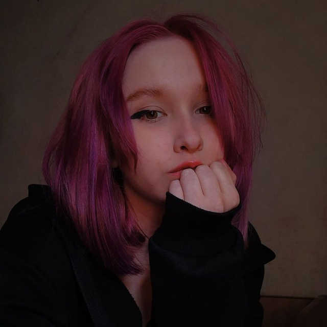

Здесь будет присутствовать основная информация автора этой веб-страницы.
Возможно, вы узнаете что-то новое об авторе, но все ваши действия делаются на свой страх и риск! Вас предупреждали! Начинаем погружение в пучину ужаса.
Как меня зовут?
Меня зовут Пинигина Дарья Андреевна.
Ниже моё фото. Так как фото со мной мало, пришлось искать долго.

Можем продолжить.
Мой возраст
Мне 17 18 лет. Дата рождения 10.02.2005.
Группа крови: AB.
Живу в Арамиле, учусь в Екатеринбурге. Жизнь немного выматывает ехать туда и обратно, но это не так критично.
С одной стороны, такая рутина заставляет меня каждый раз удивляться тому, чего нет в моём родном городе.
Живу на данный момент в полной семье и являюсь единственным ребёнком у своих родителей.
А любят они меня, или же нет... Вопрос к ним.
Учусь хорошо, если судить по логике близких. Стараюсь вникать в темы, хотя для меня это довольно сложно
при некоторых обстоятельствах.
Особо недружелюбная, поэтому ни с кем не могу контактировать.
Думаю этой информации достаточно для досье...
Мои увлечения
Узнайте, чем я увлекаюсь.
Играю в игры
Изучаю английский
Смотрю Jojo Bizzare adventure
Коллекционирую игрушки
Игры
Особенно обожаю эти игры:
Splatoon
Don't starve
К сожалению, я выделю только Splatoon!
Splatoon
Данная игра зашла мне больше всего. Сейчас я всё о ней расскажу.
К сожалению, эта игра доступна только на Nintendo Switch, что усложняет знакомство с ней в разы.
Главные достоинства этой игры:
Каждый уровень этой игры уникален и имеет другую механику.
В ней сюжет построен на основе постапокалипсиса.
Интересные персонажи.
Прекрасный мультиплеер.
Яркая и приятная графика.
Играть в эту игру одно удовольствие! Всем советую покупать ради неё Nintendo Switch.
Шедевр
Я очень люблю Jojo, особенно мне нравится простой сюжет и способности стендов.
Из всех 8 частей ДжоДжо мне нравится пятая часть. Среди всех она очень выделяется на фоне других.
Джорно Джованна — молодой амбициозный парень, живущий в школе-интернате и промышляющий мелким мошенничеством. Юноша, будучи сыном Дио Брандо, вобрал в себя как хладнокровие отца, так и пылкое, переполненное решимостью сердце Джостаров.
Любимые исполнители
Если хочешь узнать человека, то не забудь его спросить о его любимых исполнителях.
Из исполнителей я слушаю Metallica и Ado.
Да, их жанры абсолютно отличаются, но у обоих исполнителей сильный голос.
Видимо это и стало причиной любви к этим исполнителям.
У Metallica мне нравятся следующие песни:
У Ado мне нравятся следующие песни:
Коллекционирование мягких игрушек
Мягкие игрушки ассоциируются с чем-то приятным и успокаивающим. Такое увлечение вдвойне помогает снимать стресс.
Так как ты и покупаешь, тем самым радуешь себя, и обнимаешь их крепко, что весь стресс, накопленный за день уходит мгновенно.
В основном я выбираю игрушки либо популярные в сегменте, либо по недавно просмотренному сериалу или мультфильму.
Среди таких счастливчиков оказались Акула Блохей, Почита, Плюшевый Игги.
GitHub
Не бойтесь картинку под этим текстом, это просто аватарка, которая отражается каждый раз на Github.